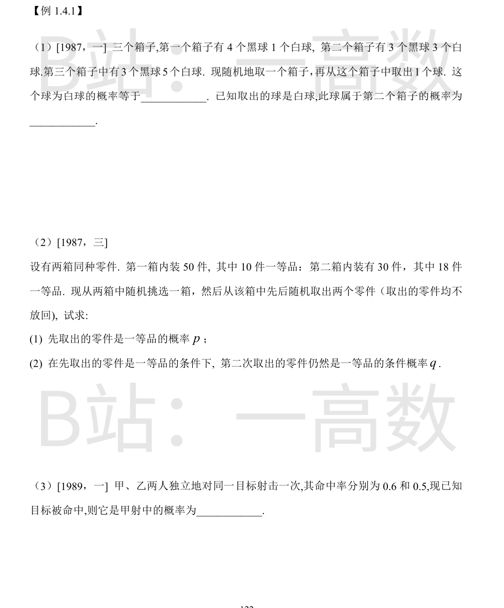
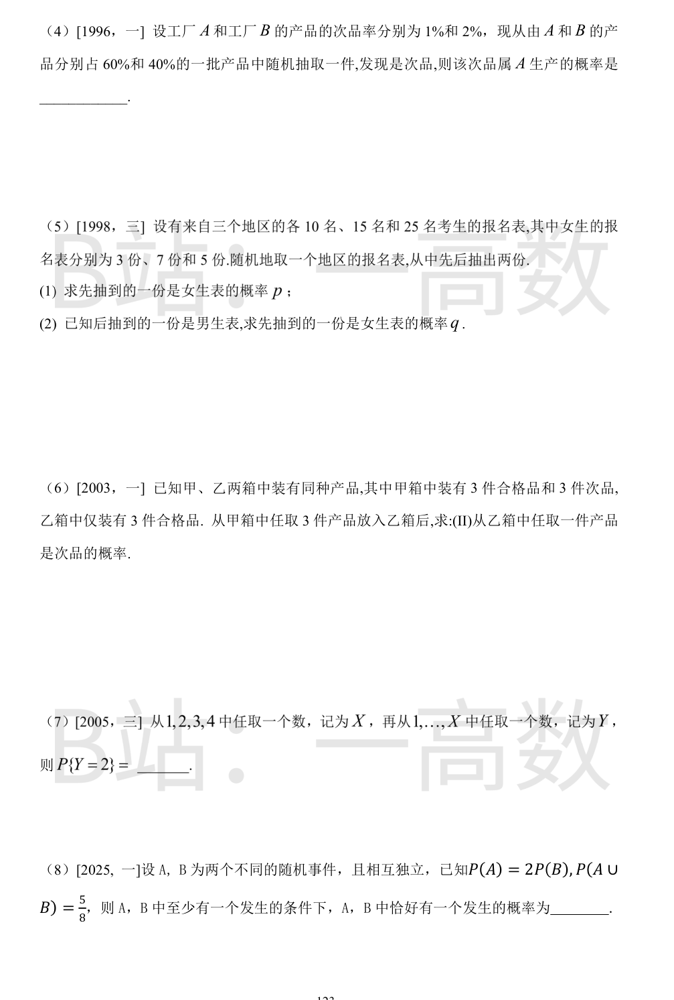
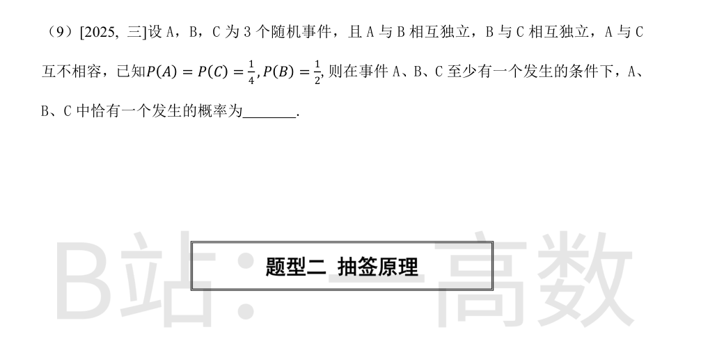
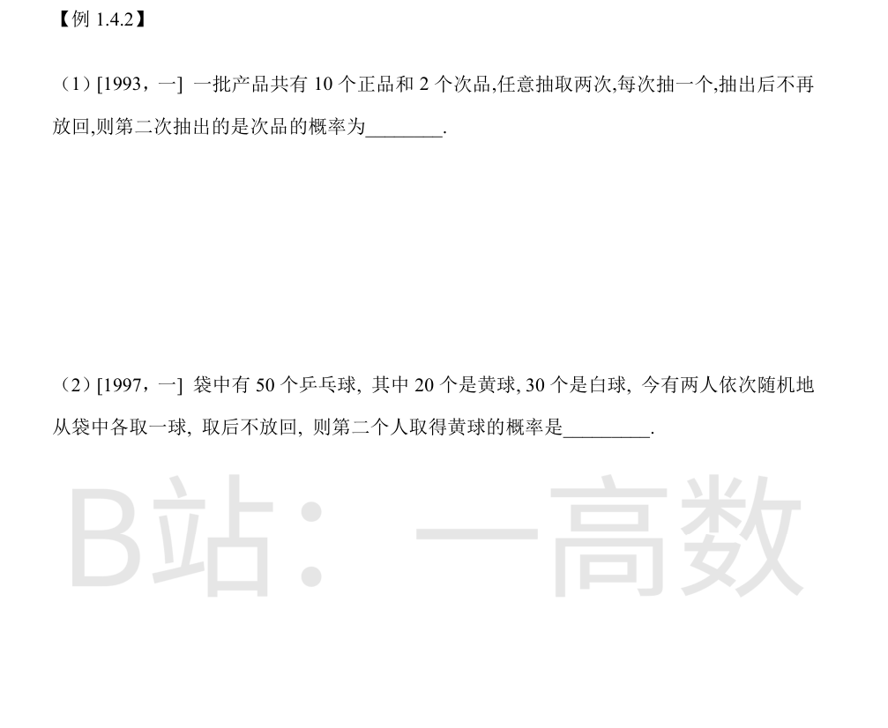

全概率公式（各箱先验概率 $\tfrac13$，白球比例分别为 $\tfrac15,\tfrac12,\tfrac58$）：
$$P(W)=\frac13\left(\frac15+\frac12+\frac58\right)=\frac13\cdot\frac{8+20+25}{40}=\frac13\cdot\frac{53}{40}=\frac{53}{120}$$
贝叶斯公式：
$$P(B_2|W)=\frac{\tfrac13\cdot\tfrac12}{\tfrac{53}{120}}=\frac{20/120}{53/120}=\frac{20}{53}$$
(1) 全概率公式：
$$p=\frac12\cdot\frac{10}{50}+\frac12\cdot\frac{18}{30}=\frac{1}{10}+\frac{3}{10}=\frac25$$
(2) 先求两件都是一等品的概率：
$$P(A_1A_2)=\frac12\cdot\frac{10}{50}\cdot\frac{9}{49}+\frac12\cdot\frac{18}{30}\cdot\frac{17}{29}=\frac{9}{490}+\frac{153}{870}=\frac{276}{1421}\approx 0.1942$$
$$q=P(A_2|A_1)=\frac{P(A_1A_2)}{P(A_1)}=\frac{276/1421}{2/5}=\frac{690}{1421}\approx 0.486$$
设 $A$=甲命中，$B$=乙命中，$A,B$ 独立，$P(A)=0.6,P(B)=0.5$。
$$P(A\cup B)=1-P(\bar A\bar B)=1-0.4\times0.5=0.8$$
$$P(A|A\cup B)=\frac{P(A)}{P(A\cup B)}=\frac{0.6}{0.8}=0.75=\frac34$$
全概率公式：
$$P(次)=0.6\times0.01+0.4\times0.02=0.006+0.008=0.014$$
贝叶斯公式：
$$P(A|次)=\frac{0.006}{0.014}=\frac{3}{7}$$
(1) 全概率公式：
$$p=\frac13\left(\frac{3}{10}+\frac{7}{15}+\frac{5}{25}\right)=\frac13\left(\frac{9+14+6}{30}\right)=\frac{29}{90}$$
(2) 先抽女后抽男的概率：
$$P(W_1M_2)=\frac13\left(\frac{3}{10}\cdot\frac{7}{9}+\frac{7}{15}\cdot\frac{8}{14}+\frac{5}{25}\cdot\frac{20}{24}\right)=\frac13\left(\frac{7}{30}+\frac{4}{15}+\frac16\right)=\frac13\cdot\frac{20}{30}=\frac29$$
后抽到男生表的概率 $P(M_2)=1-p=\dfrac{61}{90}$，故
$$q=P(W_1|M_2)=\frac{2/9}{61/90}=\frac{20}{61}$$
设 $X$ 为从甲箱取出的 3 件中次品数，$X$ 服从超几何分布 $H(6,3,3)$，$E(X)=3\cdot\dfrac{3}{6}=1.5$。放入乙箱后乙箱共 6 件、含 $X$ 件次品，故
$$P(次)=\sum_k P(X=k)\cdot\frac{k}{6}=\frac{E(X)}{6}=\frac{1.5}{6}=\frac14$$
（直接列分布 $P(X{=}k)=\binom3k\binom3{3-k}/\binom63=\tfrac{1,9,9,1}{20}$ 求和结果相同。）
全概率公式：$X$ 等可能取 $1,2,3,4$，$P(Y=2|X=k)=\dfrac1k$（$k\ge2$），$k=1$ 时为 0。
$$P\{Y=2\}=\frac14\left(0+\frac12+\frac13+\frac14\right)=\frac14\cdot\frac{6+4+3}{12}=\frac14\cdot\frac{13}{12}=\frac{13}{48}$$
设 $P(B)=p$，则 $P(A)=2p$，独立，故
$$P(A\cup B)=3p-2p^2=\frac58\Rightarrow 16p^2-24p+5=0\Rightarrow p=\frac{24\pm16}{32}$$
$p=\tfrac54$ 舍（概率不大于 1），得 $P(B)=\tfrac14$，$P(A)=\tfrac12$，$P(AB)=\tfrac18$。
$$P(\text{恰一个})=P(A\cup B)-P(AB)=\frac58-\frac18=\frac12$$
$$P(\text{恰一个}\,|\,\text{至少一个})=\frac{1/2}{5/8}=\frac45$$
$P(AB)=\tfrac18$，$P(BC)=\tfrac18$，$P(AC)=P(ABC)=0$。
$$P(A\cup B\cup C)=\frac14+\frac12+\frac14-\frac18-\frac18=\frac34$$
恰有一个发生：
$$P(\text{仅}A)=P(A)-P(AB)=\frac18,\quad P(\text{仅}B)=P(B)-P(AB)-P(BC)=\frac14,\quad P(\text{仅}C)=P(C)-P(BC)=\frac18$$
合计 $\tfrac18+\tfrac14+\tfrac18=\tfrac12$，故
$$P=\frac{1/2}{3/4}=\frac23$$

抽签原理：第 $k$ 次抽到次品的概率与第 1 次相同，等于次品占比 $\dfrac{2}{12}=\dfrac16$。
全概率验证：$P=\dfrac{2}{12}\cdot\dfrac{1}{11}+\dfrac{10}{12}\cdot\dfrac{2}{11}=\dfrac{2+20}{132}=\dfrac{22}{132}=\dfrac16$。
抽签原理：第二个人取得黄球的概率与黄球占比相同。
$$P=\frac{20}{50}\cdot\frac{19}{49}+\frac{30}{50}\cdot\frac{20}{49}=\frac{380+600}{2450}=\frac{980}{2450}=\frac25$$